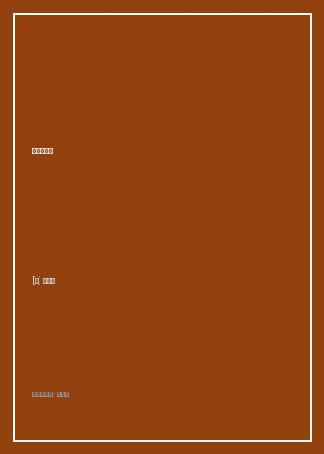

《邓小平时代》

总体观点
《邓小平时代》是国际汉学界研究当代中国转型最权威、最客观厚重的集大成史诗。傅高义以冷静克制的学者眼光，将邓小平置于两百年中国追求富强现代化的宏大历史坐标之上，深刻揭示了他作为'改革开放总设计师'在国家濒临崩溃边缘力挽狂澜、重塑当代中国与全球地缘格局的卓越领导力。
作者深入解剖了邓小平政治艺术的核心特征：极其务实的实验主义（'实事求是'、'摸着石头过河'）、坚韧不拔的意志力，以及在复杂多变的党内与国内外环境中驾驭大局、凝聚最大公约数的政治手腕。他敢于突破教条主义思想禁锢，以'黑猫白猫论'与经济建设为中心，彻底释放了十四亿中国平民创造财富的无限活力。
全书以无可辩驳的历史事实证明：邓小平留下的最宝贵制度遗产，在于确立了面向世界开放、拥抱市场竞争、不搞意识形态空谈的现代化道路。1992年南方谈话展现了一位耄耋老人以天下为己任的最后政治破局，永远改变了中国乃至人类文明的历史航道。
核心观点
-
1. 实事求是的思想破冰：真理标准大讨论对思想枷锁的打破
拨乱反正的前提是打碎两个凡是的教条神像，支持'实践是检验真理的唯一标准'大讨论，为全党与全国重新赢回独立思考与探索的权利。
1977年邓小平复出后主持科学教育座谈会，当场力排众议拍板：'今年就恢复高考，不要等明年！'一举改变数百万知青命运与国运。 -
2. 摸着石头过河的渐进改革：经济特区作为制度试验田
不搞毕其功于一役的激进休克疗法，而是允许深圳、珠海等沿海渔村先行先试搞特区，成功了在全国推广，失败了及时修正，风险可控。
面对关于特区'姓资姓社'的激烈围攻，邓小平视察深圳亲笔题词：'深圳的发展和经验证明，我们建立经济特区的政策是正确的'，定分止争。 -
3. 中英谈判与一国两制的惊天构想：主权问题不容谈判的原则底线
在收回香港主权的世纪谈判中，面对撒切尔夫人的条约有效论，邓小平展现出钢铁般的原则意志，以'一国两制'构想创造性化解世纪历史遗留难题。
邓小平在人民大会堂当面告诉撒切尔夫人：'主权问题不是一个可以讨论的问题，如果中国不收回香港，任何中国领导人都没有办法向人民交代！' -
4. 军队百万大裁军的战略胆魄：将资源全面倾斜于经济建设
改变战争不可避免的传统判断，提出和平与发展是时代主题，果断宣布裁军百万，将宝贵的财政与钢铁资源腾挪出来投入国民经济与民生建设。
在军委扩大会议上邓小平伸出一根手指宣布裁减军队员额一百万，带领国防工业全面启动军转民转型，开启三十年和平建设黄金期。 -
5. 1992年南方谈话的历史交卷：不搞改革开放就是死路一条
在东欧剧变、国内改革面临徘徊停滞的历史危急关头，88岁高龄的老人南下发表系列讲话，彻底确立社会主义市场经济体制，开启第二轮增长奇迹。
'谁不改革谁下台'、'发展才是硬道理'等振聋发聩的南巡金句通过香港与南方报端迅速传遍全国，瞬间融化了国内改革的思想坚冰。
全书思维导图 · 知识脉络树
全书结构
-
第一部分 革命之路：早年留法、苏区斗争与西南主政岁月
追溯青年邓小平赴法勤工俭学、加入旅欧支部、在中央苏区遭受排挤与刘邓大军千里跃进大别山的军事生涯，奠定其务实坚毅性格。
记述邓小平在法国雷诺汽车厂做钳工、在里昂吃硬面包喝自来水的艰苦岁月，早期西方工业文明在其心中埋下现代化的火种。 -
第二部分 挫折与蛰伏：文革风暴中的沉浮与江西小道思索
记录文革期间两度被打倒、下放江西新建县拖拉机修配厂劳动的三年零四个月，在每天清晨散步小道上对国家未来的深邃沉思。
描写邓小平在车间默默给拖拉机零件锉螺丝，用微薄津贴给高位截瘫的长子邓朴方擦洗翻身，展现极其深沉坚韧的父爱与意志。 -
第三部分 拨乱反正：1977-1978 恢复高考与三中全会破冰
记录邓小平第三次复出，抓科技与教育、推动真理标准大讨论，在十一届三中全会上把全党工作重心果断转移到经济建设上来的伟大历史转折。
详述邓小平发表《解放思想，实事求是，团结一致向前看》讲话稿的起草与定稿细节，实际上成为新时期改革开放的宣言书。 -
第四部分 改革开放的破局：特区试验、联产承包与中美建交
展现家庭联产承包责任制破冰、蛇口工业区开山炮响、中美正式建交与邓小平访美戴牛仔帽的生动外交风采，全面融入国际主流。
邓小平在访问美国得克萨斯州休斯敦观看牛仔竞技时欣然戴上阔边牛仔帽向全场挥手，瞬间赢得美国民众狂热好感的公关经典神作。 -
第五部分 治国理政攻坚：价格闯关、香港回归与百万大裁军
深入80年代中国经济转型深水区，展现邓小平在物价双轨制通胀风暴、政治体制探索与维护大局稳定中的艰难平衡与决断。
记录中英关于香港前途谈判幕后高层过招实录，还原'一国两制、港人治港、五十年不变'构想在草拟与定稿中的非凡政治智慧。 -
第六部分 历史的交卷：1992南方谈话与千秋伟业
记录邓小平乘坐专列南下武昌、深圳、珠海、上海发表著名南方谈话，确立社会主义市场经济体制，为波澜壮阔的改革时代画上圆满句号。
傅高义在全书结尾写下崇高评价：'正是邓小平的远见、胆魄与坚定意志，带领十亿人民走出封闭贫困，完成了人类历史上最伟大的现代化转型'。